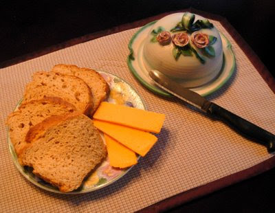

home
bread
here is a great recipe for bread.
ingredients
- 1 cup of warm water
- 1 tsp of sugar
- 1 tsp of unflavoured gelatin
- 1 1/2 tbsp of yeast
- 3/4 cup of milk
- 3 eggs
- 3 tbsp of olive oil
- 1 tbsp of cider vinegar
- 1 tbsp of molasses
- 1 tsp of zanthan gum
- 1 1/2 tsp of salt
- 1 cup of white bean flour
- 1 cup of Kinnikinnik bread/bun mix (or 1 cup of brown rice flour)
- 1/2 cup of tapioca flour
- 1/2 cup of cornstarch
directions
- mix 1 tsp sugar and 1 tsp gelatin, stir in the 1 cup warm water, then stir in yeast - let proof
- in heavy duty mixer beat eggs slightly, then add other wet ingredients including proofed yeast
- sift together dry ingredients and then add to the liquid, beating hard for 3 or 4 minutes, you will see the batter change and become smooth (consistency needs to be right, batter that is too thick will not rise, too thin it will rise and then fall)
- it'll make one loaf
- you should line the pans with wax paper and oil them (it's sticky)
here is the result
